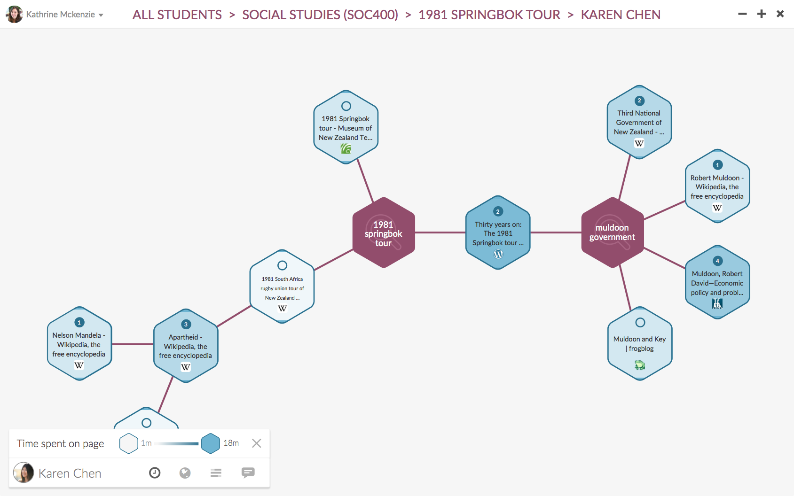

Trailblazer
Trailblazer
See how your students are learning. Create life-long learners.
Sign up for the beta.
Trailblazer helps your students develop their digital literacy; and it shows you how they research online. Step in and help them ask better questions, and see who’s just stopped at Wikipedia.

Keep your students organised
Trailblazer helps your students stay organised while they're doing their online research. No more lost notes, lost bookmarks and contrived bibliographies.
See how your students are learning.
See how your students are researching online. Step in to ask better questions; see who stopped on Wikipedia; and help your students learn how to learn.